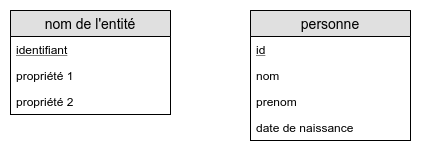

Merise est une méthode d'analyse, de conception et de gestion de projet informatique.
Wikipedia
La méthode d'analyse Merise dispose de deux méthodes de représentation des données intéressantes pour la conception de base de données.
Un MCD va permettre de représenter les différentes entités d'un système ainsi que les associations entre ces entités.
Une entité va représenter un objet de gestion (une voiture, une personne, une facture, une entreprise...) tandis qu'une association va représenter un lien entre deux entités (conduit, paye, rédige...).
Une entité aura un nom, un identifiant ainsi que des propriétés.
Une association aura un nom ainsi qu'une liste optionnelle de données incluses dans l'association.
Nous allons également préciser sur chaque association les cardinalités.
Les cardinalités se lisent de la façon suivante :
Réalisez le MCD d'une application pour un cabinet médical en suivant les règles de gestion suivantes :
Un MLD peut être généré à partir d'un MCD. Il permettra de représenter shématiquement les tables à créer dans une base de données.
On ne parlera alors plus d'entités mais de tables, les identifiants deviennent des clés et les attributs des colonnes.
Pour effectuer la transition, nous allons appliquer un certain nombre de changements...
| Entité A | Entité B | Résultat |
|---|---|---|
| 0,1 ou 1,1 | 0,N ou N,N | Création d'une clé étrangère dans l'entité A |
| 0,N ou 1,N | 0,N ou N,N | La relation entre les entités est transformée en table |
Réalisez le MCD puis le MLD d'une application de gestion d'une école en suivant les règles de gestion suivantes :
Réalisez le MCD puis le MLD d'une application de gestion d'une concession automobile en suivant les règles de gestion suivantes :